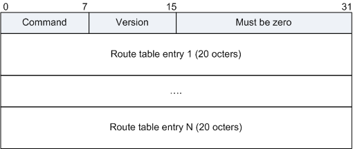

RIPng报文由头部（Header）和多个路由表项RTEs（Route Table Entry）组成。在同一个RIPng报文中，RTE的最大数目根据接口的MTU值来确定。

RIPng报文各字段解释如下表：
| 字段名 | 长度 | 含义 |
|---|---|---|
| Command | 8比特 | 标识报文的类型：
|
| Version | 8比特 | RIPng的版本号：其值为1。 |
| Must be zero | 16比特 | 必须为零字段。 |
| RTE（Route table entry） | 20字节 | 路由表项。 |
RIPng有两类RTE，分别是：
下一跳RTE：位于一组具有相同下一跳的“IPv6前缀RTE”的最前面，它定义了下一跳的IPv6地址。
IPv6前缀RTE：位于某个“下一跳RTE”的后面，同一个“下一跳RTE”的后面可以有多个不同的“IPv6前缀RTE”。它描述了RIPng路由表中的目的IPv6地址及开销。
| 字段名 | 长度 | 含义 |
|---|---|---|
| IPv6 prefix | 16字节 | 目的IPv6地址的前缀。 |
| Route tag | 16比特 | 路由标记，用来区分外部路由。 |
| Prefix len | 8比特 | IPv6地址的前缀长度。 |
| Metric | 8比特 | 路由的度量值（开销）。 |
| 文档编号 | 描述 |
|---|---|
| RFC 2080 | RIPng for IPv6 |